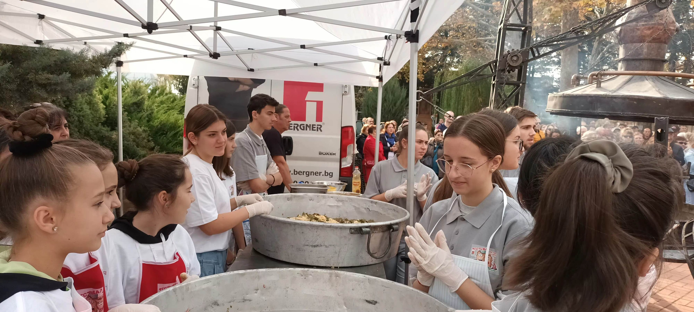
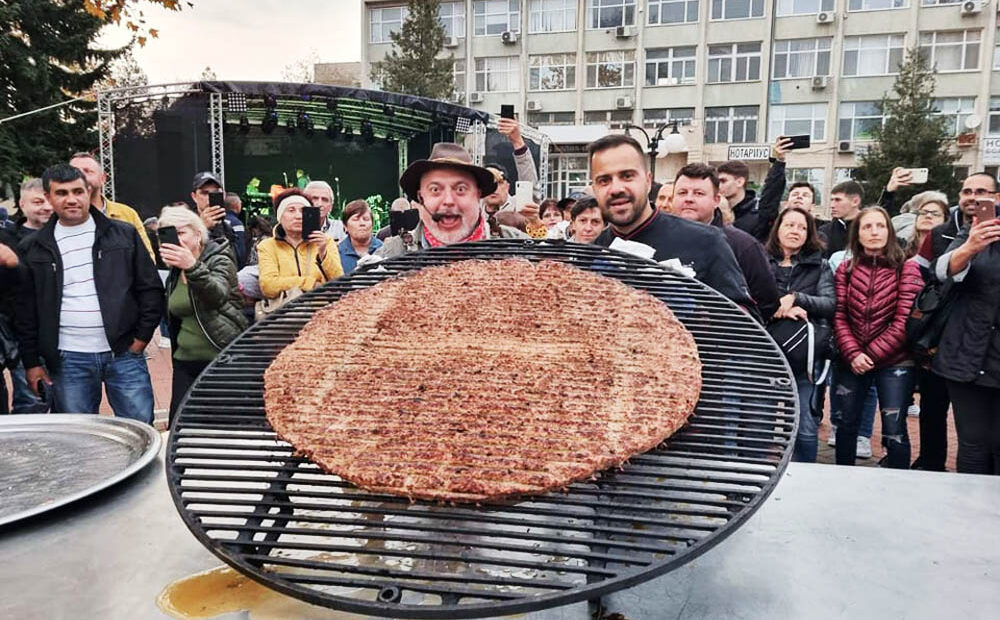
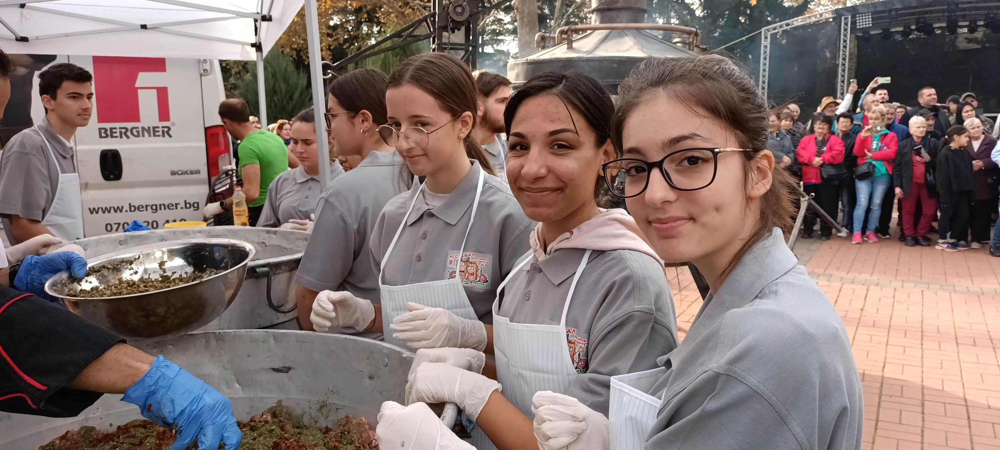

Ути Бъчваров се похвали с 50-килограмовите кюфтета в Генерал Тошево
На празника на нашия град бяхме част от екипа на Ути Бъчваров и заедно омесихме каймата за най-големите кюфтета.
Рекорд – 50-килограмови кюфтета и тон руска салата приготви Ути в Ген. Тошево
Целият град гледаше и се възхищаваше на готвача. Майки, деца та дори и възрастни се включиха в този общ спомен.
„Обаче най-голямата сърма е добруджанската. В Добруджа всичко е голямо. Говорим за Добруджа. Говорим за там, където Йовков е писал своите разкази, говорим за Генерал Тошево. Там сармата е ей, толкоз голяма”, заяви Ути.
Телевизионният кулинар Ути Бъчваров се похвали в социалната мрежа, че успя да направи 50-килограмово кюфте на огромното си барбекю по време на Фестивала на сармата и кюфтето в Генерал Тошево.